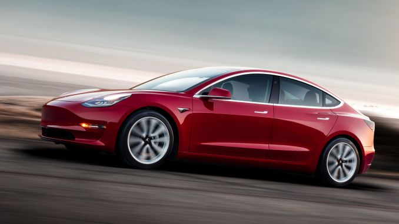
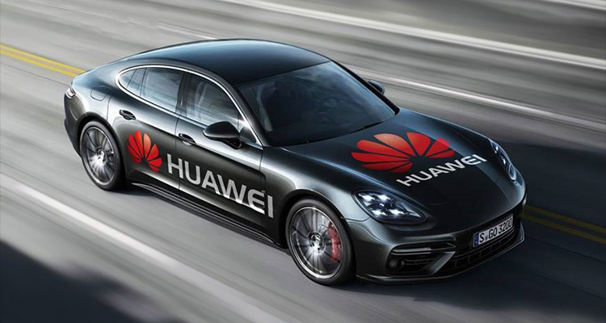

There have been many advancements in autonomous vehicles over the last few years. These breakthroughs include:
However, specific companies are also looking to develop their own brand of autonomous vehicles and break into the industry with new cutting-edge technology. Lets have a look at few of them.
Tesla has introduced their biggest software update ever as of the 26th September. A huge range of new features such as music and entertainment has been added, as well as advancements in the car's AI. These improvements include:
Smart Summon
This update includes Smart Summon, which means customers who have purchased Full Self-Driving Capability or Enhanced Autopilot can enable their car to navigate a car park and come to a destination of choice, if their car is within their line of sight. This new feature is meant to add more convenience to the driver as well as added enjoyment. However, the driver or passengers are still fully responsible for the car and must always monitor it and the surrounding area to assure that it is safe for everyone around.
Destinations
This new update also comes with other new features such as “I’m Feeling Lucky” or the “I’m Feeling Hungry” features where the AI of the car will take the passengers to a randomised destination, including landmarks and restaurants, near the vehicle's current location (The Tesla Team, 2019).
Ford has announced plans to introduce a commercial transport service using autonomous vehicles in 2021. Ford is currently researching and developing advanced algorithms, 3-D mapping, radar technology and camera sensors to achieve this.
The vehicle will have no need of a steering wheel, gas or brake pedal. It will operate within geo-fenced areas as part of a carpool experience. By doing this, the vehicle will be classified as a SAE Level 4 vehicle, one of highest Automation levels, that can complete all processes of driving without a human driver being needed.
This project is in collaboration with four other technology companies, which all have expertise in different areas to achieve the 2021 deadline. These companies are Velodyne, SAIPS, Nirenberg Neuroscience LLC and Civil Maps (Ford Team, Unknown).
Huawei, a Chinese company, has recently announced that radar for autonomous vehicles using 5G technology is currently in development. This was revealed during their press conference in Beijing on the 22nd of October.
In April 2019, Huawei launched their 5G technology for the car industry and is looking to expand into the autonomous vehicle sector. Huawei's announcement is no surprise considering China is already taking steps to compete with the USA in the race to create autonomous cars. The company is looking to develop millimetre-wave radar and laser radar. These will be used to analyse and collect data on the car's surrounding area, such as other vehicles, people and road hazards.
However, no set date for its launch has been revealed yet. (Sun, 2019)
StreetWise has announced they are launching the UK's most advance autonomous car trials in London. The technology has been developed by FiveAI and is to be tested on public roads and areas in the city. The aim of the project is to investigate self-driving vehicle services through research in safety, insurance and technology. This project is a collaboration between FiveAI, Direct Line and TLR, who believe it could increase safety on the roads and create economic opportunities.
Each company plays an important part in the project. FiveAI's contribution to the project is the development of the software that controls the operations of the car. Direct Line's role is to provide participants for the trials, and TLR are analysing the results collected from the testing. They are also creating a database of possible situations for testing and the safety case for the whole project.
To be a participant of these trials, you must be invited to join. It is believed that their services can eventually provide a cleaner, quicker way to commute. The trials are meant to take place from October to November this year. (Unknown, 2019)
Harding, J.(Unknown) Driverless cars: what are autonomous vehicles? Available at: https://www.which.co.uk/reviews/new-and-used-cars/article/driverless-cars-what-are-autonomous-vehicles#Tech (Accessed: 25 October 2019)
The Tesla Team. (2019) Introducing Software Version 10.0. Available at: https://www.tesla.com/en_GB/blog/introducing-software-version-10-0 (Accessed: 25 October 2019)
Tesla Image – www.tesla.com
Ford Team (Unknown) Looking Further Ford will have a fully autonomous vehicle in operation by 2021. Available At:https://corporate.ford.com/articles/products/autonomous-2021.html (Accessed: 25 October 2019)
Unknown. (2019) Huawei to develop radars for self-driving cars, top executive says. Available at: https://uk.reuters.com/article/uk-huawei-tech-autonomous/huawei-to-develop-radars-for-self-driving-cars-top-executive-says-idUKKBN1X11I1 (Accessed: 24 October 2019)
Huawei Image - https://consumer.huawei.com/uk/press/news/2018/driverless-car/
Sun, Y. (2019) StreetWise launches the UK’s most technically advanced commuter research trials in self-driving vehicles. Available at: https://trl.co.uk/news/news/streetwise-launches-uk%E2%80%99s-most-technically-advanced-commuter-research-trials-self-driving (Accessed: 25 October 2019)